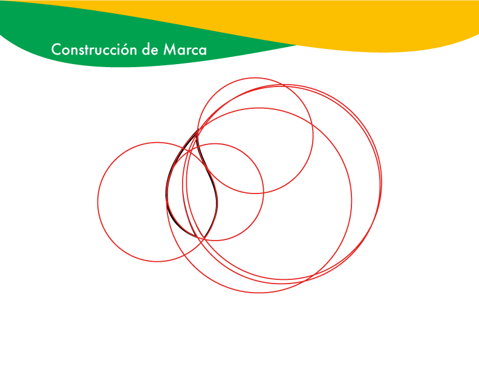
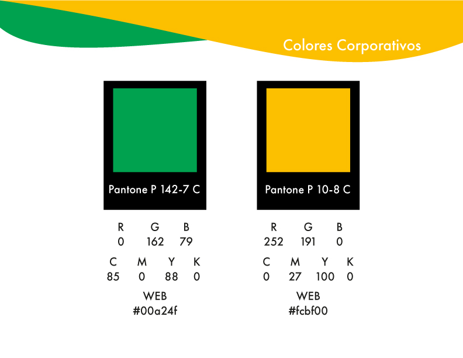
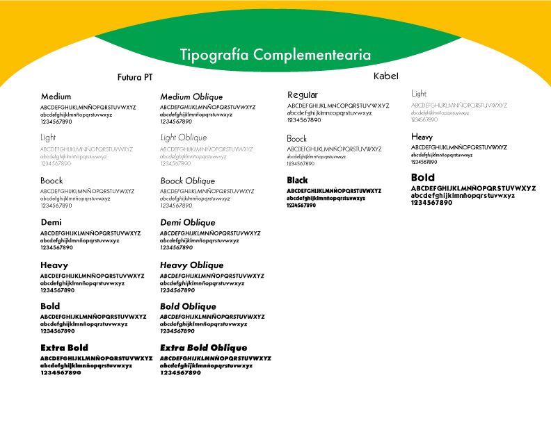

Descripcion de mi Portafolio
Este proyecto de la marca Matices Ecocosmética fue un trabajo que hize en base a los conceptos de ecología y la cosmética. Para este diseño de marca creé las figuras de unas ojas girando reflejando la fragancia y la esencia de la naturaleza, y utilizando colores pantón verdes y amarillos para dar un aire radiente, y usé las tipografías Futura PT y Kabel para así darle un toque de elegancía.
Cliente
Marcelo Huaracan Rivas
Tiempo de Desarrollo
1 mes
"si necesitas algo como esto, no dude en hablarme"
CONTÁCTEMETecnologia utilizada
-
Illustrator 80%
-
Photoshop 20%
Revisa este Proyecto en:


